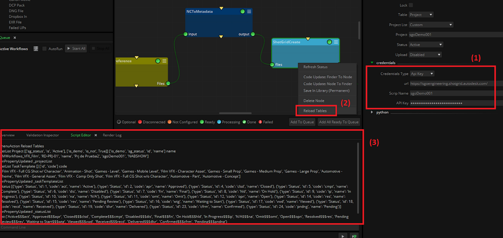
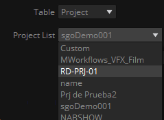
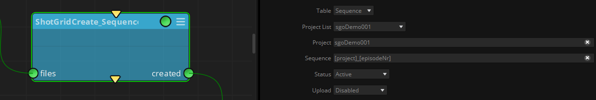
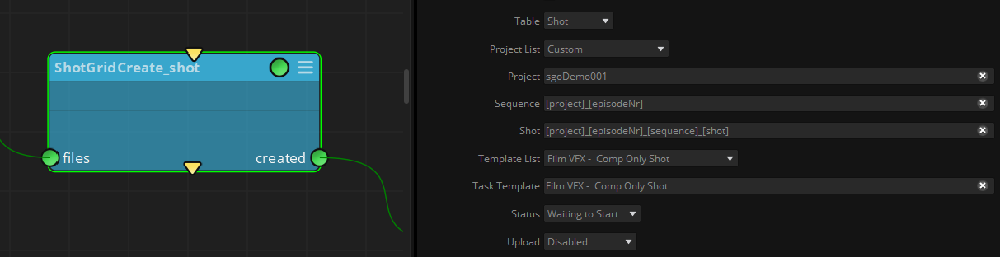
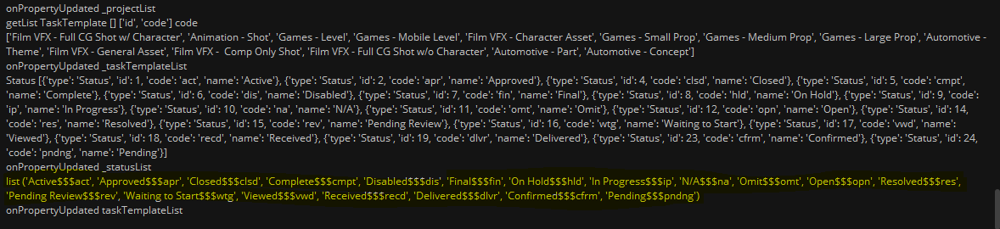
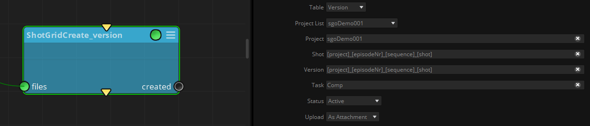
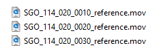
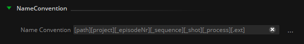
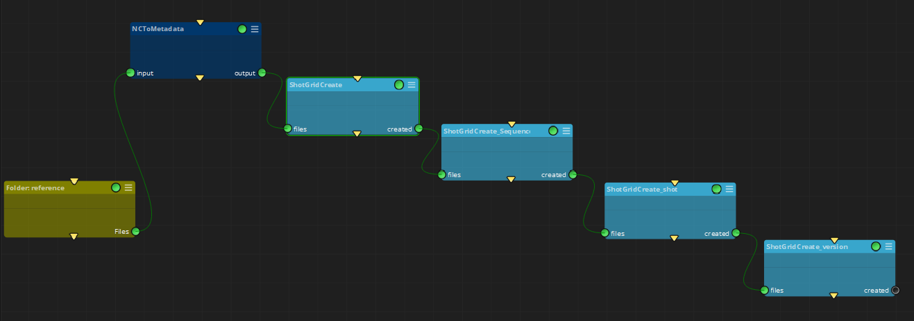
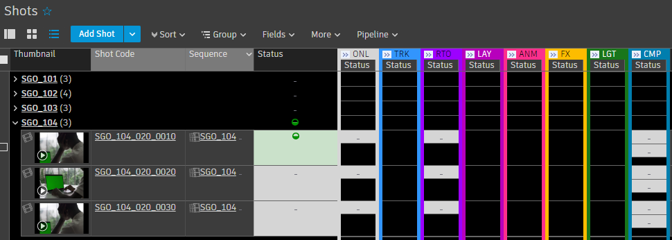

|
<< Click to Display Table of Contents >> ShotGrid Create |
This node connects to a Shotgrid database and allows the creation of Shotgrid’s entities based on any kind of input files: Project, Asset, Sequence, Shot and Version.
In order to connect to an existing Shotgrid database, credentials can be granted in two different ways (1):
•User/Pwd: Uses an existing user in the database. To perform the creation of new entities it must have the appropriate privileges in the database.
•API Key: Uses a script created in the ShotGrid database with its corresponding API Key. The script must also have the appropriate privileges.
To learn more about creating scripts in ShotGrid, please consult the official documentation: https://developer.shotgridsoftware.com/99105475/
To check your connection with the Shotgrid database, simply right-click on the node and select ‘Reload Tables’ in the contextual menu (2). This will update the menus in the node according to the database getting the projects available, as well as the TaskTemplates and other properties needed to create the different assets. The ‘Reload Tables’ response from the ShotGrid site showing this information can be observed in the Script Editor panel (3).

Once tables are updated, in the node Properties we can select the kind of table to be created.
If the table is ‘Project’, then in the Project List pulldown menu we can select an existing project where we want to create the rest of the assets.

If we want to create Sequence type of table, a box will appear to introduce its naming. A Sequence must always be created within an existing Project.
In order to establish a dynamic sequence naming, tokens can be used here (refer to NC to metadata node for more information about how to extract tokens from a file naming structure).

If we want to create Shot table type , another box will appear to introduce its naming, where tokens can also be used.
A Shot must always be created within an existing Sequence in a Project. A Shot also needs to have assigned a Task Template and a status.
To get the list of available Task Templates just right click on the node and select ‘Reload tables’.
We can also see the available statuses to be assigned to the created shots in the Script Editor panel after reloading the tables.


If we want to create a ‘Version’ table type, another box will appear to introduce its naming, and also another one to assign the Task where the version of the shot is wanted to be created.
In addition, a pulldown menu with the Status to be assigned to the Version will appear.

All assets offer the possibility of uploading the input files processed as attachment or as thumbnail. However, due to ShotGrid's internal behavior, only if a file is uploaded when creating a Version it will be automatically transcoded and appear as playable media in the browser. Uploaded files when creating a Shot will appear as a downloable attachment in a column field, but they will not be automatically transcoded neither will appear as playable media with its corresponding thumbnail.
All uploaded videos are transcoded into a streamable 1080p, H.264 format. To learn more about transcoding in ShotGrid, please consult the official documentation: https://help.autodesk.com/view/SGSUB/ENU/?guid=SG_Supervisor_Artist_sa_review_approval_sa_transcoding_html
Finally, in order to automate the creation of different Assets, Sequences, Shots and Versions, several ShotGrid Create nodes can be concatenated, and its naming structure can be extracted from the source files name convention. For example, if we want to create the shots corresponding to this reference files:

We can define the name convention in the source folder of this files as following:

You can use the NC to metadata node to get token values from filenames. Then, combine multiple ShotGrid Create nodes to create assets, using these tokens to determine asset names.

After the execution of this workflow we will have the following structure created in our ShotGrid site:

files: Files to be used to create the ShotGrid asset structure.
created: The files used as input and processed, as well as it creates the desired asset structure in the ShotGrid site.
.
Table: the kind of table to be consulted or created in the ShotGridsite. It can be ‘Project’, ‘Asset’, ‘Sequence’, ‘Shot’ or ‘Version
Project List: On right click -> Reload Tables, it shows the projects availables in the ShotGridsite.
Project: the name of the project
Sequence (only if Table ‘Sequence’ is selected): the name of the sequence to be created in the ShotGridsite.
Shot (only if Table ‘Shot’ is selected): the name of the shot to be created in the ShotGridsite.
Template List (only if Table ‘Shot’ is selected): On right click -> Reload Tables, it shows the TaskTemplates available in the shotgrid site.
Task Template (only if Table ‘Shot’ is selected): The TaskTemplate selected in the previous pulldown.
Task (only if Table ‘Version’ is selected): The Task of the shot where the Version is going to be created.
Status: The status to be assigned to the asset created. To learn more, please consult the official documentation: https://help.autodesk.com/view/SGSUB/ENU/?guid=SG_Producer_pr_project_tracking_pr_statuses_html
Upload (Disabled / As Attachment / As Thumbnail): Menu to upload the processed file to the shotgrid site as attachment or thumbnail, if desired.
Credentials
Credentials Type (API Key - User/Pwd): Type of credentials used to log in in the shotgrid site and create the assets.
Url: the ShotGridsite url
Script Name: the name of the script created in the ShotGridsite.
API Key: the key generated by shotgrid to authenticate the script created.
User: the user to log in
Pwd: the password of the user to log in.